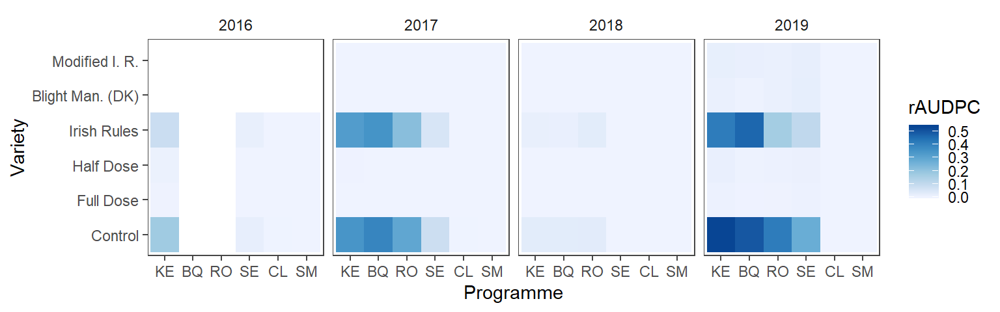
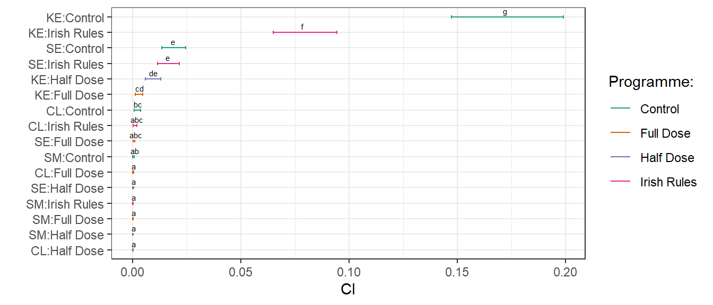
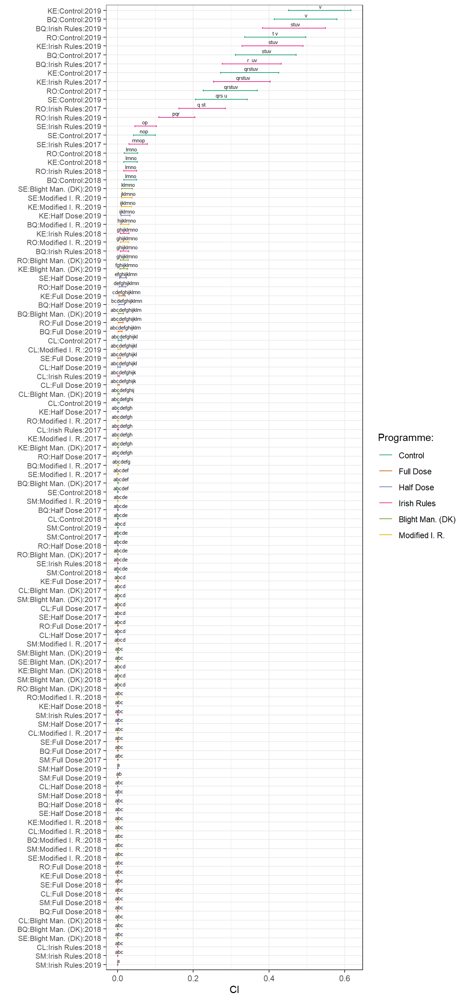
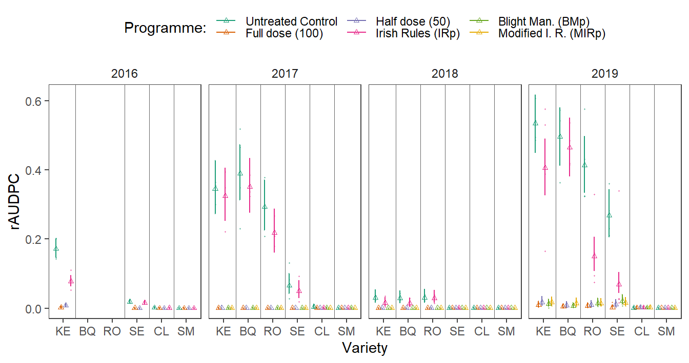

Data
Disease analysis
Impact of the dose reduction on the potato late blight development on potato varieties differing in their resistance level.
Load packages
list.of.packages <-
c(
"tidyverse",
"data.table",
"ggplot2",
"knitr",
"readxl",
"agricolae",
"egg",
"hrbrthemes",
"glmmTMB",
"sjPlot",
"effects",
"lsmeans",
"multcomp",
"car"
)
new.packages <-
list.of.packages[!(list.of.packages %in% installed.packages()[, "Package"])]
#Download packages that are not already present in the library
if (length(new.packages))
install.packages(new.packages)
packages_load <-
lapply(list.of.packages, require, character.only = TRUE)
#Print warning if there is a problem with installing/loading some of packages
if (any(as.numeric(packages_load) == 0)) {
warning(paste("Package/s: ", paste(list.of.packages[packages_load != TRUE], sep = ", "), "not loaded!"))
} else {
print("All packages were successfully loaded.")
}## [1] "All packages were successfully loaded."rm(list.of.packages, new.packages, packages_load)
#if instal is not working try
#install.packages("ROCR", repos = c(CRAN="https://cran.r-project.org/"))The (disease) data
ls <-
map(list.files(here::here("data", "disease"), full.names = TRUE, pattern = "disease"), readRDS)
ls <-
lapply(ls, function(x) rename(x, date = "time" ))
ls <-
lapply(ls, function(x) ungroup(x) %>% mutate_if(is.factor, as.character) )
ls <-
map(ls, function(x)
x %>%
mutate(julian_day = yday(as.Date(date))) %>%
group_by(variety) %>%
mutate(time = ifelse(is.na(lag(julian_day)), 1,
julian_day - lag(julian_day))) %>%
mutate(time = cumsum(time)))
dis_obs <-
ls %>%
bind_rows()Summaries.
dis_obs %>%
rename(Year = year) %>%
group_by(Year) %>%
summarise(`Initial Disease Outbreak` = min(date),
`Final disease assesment` = max(date)) p1 <-
dis_obs %>%
bind_rows() %>%
unite(date, c(julian_day, year), sep = "/", remove = F) %>%
mutate(date = as.Date(date, format = "%j/%Y")) %>%
mutate(year = as.factor(year)) %>%
ggplot() +
ggridges::geom_ridgeline(aes(x=julian_day,y=as.factor(year),fill = year,height = 0.4),stat="identity")+
scale_x_continuous(
limits = c(150, 270),
expand = c(0, 0), name = "Day of year"
) +
scale_y_discrete(name = "Year")+
ggtitle("Durations of epidemics")+
ggridges::theme_ridges(center = TRUE)+
theme(legend.position = "none")
#Years, number of disease assesments and number of cultivars
p2 <-
lapply(ls, function(x) {
assessments <- length(unique(x$time))
cultivars <- length(unique(x$variety))
data.frame(assessments = assessments,
cultivars = cultivars)
}) %>%
bind_rows(.id = "year") %>%
gather(value, Number_of, assessments:cultivars) %>%
ggplot(aes(
x = year,
y = Number_of,
fill = value,
label = value
)) +
geom_bar(
stat = "identity",
color = "black",
position = position_dodge(),
width = 0.9
) +
geom_text(
aes(label = Number_of, y = Number_of - 1.3),
color = "white",
position = position_dodge(0.9),
size = 5
) +
ylab("count") +
scale_fill_brewer(palette = "Paired") +
theme_minimal() +
theme( axis.title.x = element_blank(),
axis.title.y = element_blank())+
labs(x = "Year", y = "", fill = "Number of:", title = "")+
scale_x_discrete(labels = unique(dis_obs$year))+
theme(legend.position = "top")+
coord_equal(1/4)
egg::ggarrange(p1,p2, ncol=2)
ggsave(p1 ,filename= here::here("results", "dis", "no of cultivars&assesssments.png"), width = 4, height = 4, dpi = 620)
ggsave(p2, filename= here::here("results", "dis", "Duration of the epidemics in years.png"))Calculate the relative area under the disease progress curve (rAUDPC).
dis_obs <-
dis_obs[!rowSums(is.na(dis_obs))>0,]
dis_obs$treatment <-
factor(dis_obs$treatment,
levels = c("Control", "Full Dose","Half Dose","Irish Rules","Blight Man. (DK)" ,"Modified I. R."))
dis_obs <-
dis_obs %>%
ungroup() %>%
mutate(variety = ifelse(variety == "T5821/11", "CL",
ifelse(variety == "King Edward" , "KE",
ifelse(variety == "Setanta", "SE",
ifelse(variety == "Sarpo Mira", "SM",
ifelse(variety == "Rooster", "RO",
ifelse(variety == "British Queen", "BQ", ""))))))) %>%
mutate(variety = factor(variety, levels =c("KE","BQ", "RO", "SE", "CL","SM")))
saveRDS(dis_obs,file = here::here("data", "disease", "dis_obs.rds") )
audpc_data <-
dis_obs %>%
bind_rows() %>%
group_by(year, treatment, variety, bloc) %>%
summarize(rAUDPC = audpc(obs, julian_day, type = "relative")) %>%
ungroup()Visualise the data
audpc_data$block<-factor(audpc_data$bloc)
audpc_data$year<-factor(audpc_data$year)Different visualisations are neccessary to get an idea about the data at our hands. However, people percieve the visualisations in different ways, so there are few presented here.
Here we present the response, level of the disease in relation to three factors fungicide programme, potato variety and year.
audpc_plot <-
audpc_data %>%
bind_rows() %>%
group_by(variety) %>%
ggplot(aes(x = as.factor(variety),
y = rAUDPC,
colour= as.factor(variety),
group = as.factor(variety))) +
geom_dotplot(binaxis='y',
stackdir='center',
dotsize = .3)+
geom_boxplot(width = 0.3,binwidth = 100)+
theme_bw()+
xlab("model")+
ggtitle("rAUDPC of potato varieties per Fungicide programme")+
facet_grid(year~treatment, scales = "free"
)+
scale_colour_brewer("Variety:",
palette = "Dark2")+
theme(
axis.text.x=element_blank(),
axis.ticks.x=element_blank())+
ggsave(filename= here::here("results", "dis", "rAUDPC.png"),
width = 8, height = 5, dpi = 620)
audpc_plot
Means across replicates are presented in the heatmap.
audpc_data %>%
#Shorten the names and ste levels of the factor
group_by(year, treatment,variety) %>%
summarise(rAUDPC = mean(rAUDPC)) %>%
ggplot( aes(variety,treatment, fill = rAUDPC))+
geom_tile() +
facet_grid(~year)+
# scale_fill_gradient(low="white", high="blue", na.value = "grey50") +
scale_fill_distiller(palette = "Blues", direction = 2) +
theme_article()+
labs(x = "Programme", y = "Variety")+
ggsave(filename= here::here("results", "dis", "rAUDPC heatmap.png"),
width = 7.5, height = 2.1, dpi = 620
) Finally, the means of the replicates of the disease progres is presented below.
max_time <-
dis_obs$time %>% max
# as.mmdd <- function(x, ...) UseMethod("as.mmdd")
# as.mmdd.Date <- function(x, ...) structure(x, class = c("mmdd", "Date"))
# as.Date.mmdd <- function(x, ...) structure(x, class = "Date")
# format.mmdd <- function(x, format = "%m-%d", ...) format(as.Date(x), format = format, ...)
#
# DF <- data.frame(x = as.Date("2018-03-26") + 0:2) # test data
#
# dis_obs <- transform(dis_obs, date = as.mmdd(date))
dis_obs %>%
group_by(treatment, variety, year, julian_day) %>%
summarise(rating = mean(obs)) %>%
ggplot(aes(x = julian_day,
y = rating,
colour = variety,
group = variety)) +
geom_line(aes(y = rating),
size = 0.2,
linetype = "dotted") +
# scale_x_continuous(labels = c())+
scale_y_continuous(limits = c(0, 100))+
geom_line(size = 0.3) +
ylab("Disease rating (%)") +
xlab("Julian day of year") +
labs(colour = "Variety")+
facet_grid(year~treatment,
scales = "free") +
# ggtitle("Disease progress curves") +
egg::theme_article() +
theme(legend.position = "top")+
ggsave(filename= here::here("results", "dis", "dpc.png"),width = 7, height = 5, dpi = 820
)
Model fitting procedure
The response (rAUDPC) is a proportion and we have a random component so we will analyse this data with beta general mixed effects models (GLMM). Adding small numeric constant to the 0 values. Anova tables are calculated using Wald chi-square statistics for comparisons.
audpc_data$block<-factor(audpc_data$bloc)
audpc_data$year<-factor(audpc_data$year)
audpc_data$rAUDPC_adj <- audpc_data$rAUDPC
audpc_data$rAUDPC_adj[audpc_data$rAUDPC == 0] <- 1e-10Since two levels are missing in the year 2016 it is analysed separately.
fit_2016 <- glmmTMB(rAUDPC_adj ~ block + variety * treatment + (1 | block:treatment),
family = beta_family,
data = subset(audpc_data, year == "2016"))
car::Anova(fit_2016)Goodness of fit tests.
plot(fitted(fit_2016), residuals(fit_2016), xlab = "Fitted Values", ylab = "Residuals")
abline(h = 0, lty = 2)
t <- broom.mixed::tidy(fit_2016, conf.int = TRUE)
t <-
filter(t, effect != "ran_pars") %>%
dplyr::select(-c(component, group))
write_csv(t, path = here::here("results", "dis", "2016fit.csv"))
rm(t)Second model is fitted to the rest of the data.
fit_rest <- glmmTMB(rAUDPC_adj ~ block:year + year * variety * treatment + (1 | block:treatment:year),
family = beta_family,
data = subset(audpc_data, year != "2016"))
car::Anova(fit_rest)Goodness of fit tests.
plot(fitted(fit_rest), residuals(fit_rest), xlab = "Fitted Values", ylab = "Residuals")
abline(h = 0, lty = 2)
t1 <- broom.mixed::tidy(fit_rest, conf.int = TRUE)
t1 <-
filter(t1, effect != "ran_pars") %>%
dplyr::select(-c(component, group))
write_csv(t1, path = here::here("results", "dis", "fit_rest.csv"))
rm(t1)Post hoc
ae <- allEffects(fit_2016)
plot(ae[[2]],multiline=TRUE,confint=TRUE,ci.style="bars"
,main="Effect of treatment and variety in 2016"
,xlab="Variety"
,ylab="Treatment")
e <- allEffects(fit_rest)
plot(e[[2]],multiline=TRUE,confint=TRUE,ci.style="bars"
,main="Effect of treatment and variety 2017-2019"
,xlab="Variety"
,ylab="Treatment")
rm(ae,e)

For multiple comparisons and post hoc tests, the estimated marginal means, standard errors and confidence intervals were calculated fo both model fits and presented in a single figure (see the last figure in the document).
For 2016:
posthoc<-
emmeans:: lsmeans(fit_2016, pairwise~treatment * variety, adjust="tukey", type = "response")
d2016 <-
cld(posthoc[[1]],
alpha =.05,
Letters=letters)
d2016 <-
d2016 %>%
tbl_df() %>%
unite( "pairs", variety, treatment, sep = ":",remove= FALSE )
d2016$.group <- trimws(d2016$.group)
d2016$pairs <-
factor(d2016$pairs, levels = d2016$pairs[order(d2016$prop)])
ggplot(d2016, aes(x=pairs, y = prop, colour = treatment))+
geom_errorbar(aes(ymin=lower.CL, ymax=upper.CL), width=.2)+
geom_point(size = .1)+
scale_color_brewer("Programme:", palette = "Dark2") +
labs(x=" ", y="CI")+ coord_flip()+
geom_text(
aes(label = .group),
vjust = -0.5,
hjust = 0.3,
color = "black",
position = position_dodge(0.9),
size = 2
) +
theme_bw()+
ggsave(filename= here::here("results", "dis", "pairwise comparisons 2016.png"),
width = 7, height = 2.5, dpi = 620)
For the remaining years.
posthoc<- emmeans:: lsmeans(fit_rest, ~treatment * variety *year, adjust="tukey", type = "response")
drest <- posthoc
(drest <-
cld(posthoc,
alpha = .05,
Letters=letters))drest <-
drest %>%
tbl_df() %>%
unite( "pairs", variety, treatment, year, year, sep = ":",remove= FALSE )
drest$pairs <-
factor(drest$pairs, levels = drest$pairs[order(drest$prop)])
drest$.group <- trimws(drest$.group)
ggplot(drest, aes(x=pairs, y = prop, colour = treatment))+
geom_errorbar(aes(ymin=lower.CL, ymax=upper.CL), width=.2)+
geom_point(size = .1)+
scale_color_brewer("Programme:", palette = "Dark2") +
labs(x=" ", y="CI")+ coord_flip()+
geom_text(
aes(label = .group),
vjust = -0.5,
hjust = 0.3,
color = "black",
position = position_dodge(0.9),
size = 2
) +
theme_bw()+
theme(axis.text.y = element_text(size = 8))+
ggsave(filename= here::here("results", "dis", "pairwise comparisons.png"),
width = 7, height = 11.5, dpi = 420)
Combining the estimates from both models in a single data set.
d2016$year <- "2016"
d1 <-
dplyr::bind_rows(d2016, drest)
d1 <-
d1 %>%
mutate(variety = factor(variety, levels =c("KE","BQ", "RO", "SE", "CL","SM"))) %>%
mutate(year = factor(year, levels =c("2016","2017", "2018", "2019"))) %>%
mutate(treatment = factor(treatment, levels = c("Control", "Full Dose","Half Dose","Irish Rules","Blight Man. (DK)" ,"Modified I. R.")))The final plot.
#Set the position dodge
dodging <- .8
p_fin <-
d1 %>%
#Add vertical lines for clarity
mutate(
line_positions = as.numeric(factor(variety, levels = unique(variety))),
line_positions = line_positions + .5,
line_positions = ifelse(line_positions == max(line_positions), NA, line_positions),
line_positions = ifelse(year == 2016 &
variety == "CL", 5.5, line_positions),
line_positions = ifelse(year == 2016 &
variety == "SE", 3.5, line_positions)
) %>%
ggplot(data = ., aes(x = variety, y = prop)) +
geom_errorbar(
aes(
ymin = lower.CL,
ymax = upper.CL,
group = treatment,
color = treatment
),
position = position_dodge(width = dodging),
width = .2
) +
geom_point(
aes(y = prop, group = treatment, color = treatment),
size = 1,
shape = 2,
position = position_dodge(width = dodging)
) +
facet_wrap(~ year, nrow = 1) +
geom_point(
data = subset(audpc_data),
aes(y = rAUDPC_adj, color = treatment, group = treatment),
size = .2,
alpha = .5,
position = position_dodge(width = dodging)
) +
theme_article() +
theme(legend.position = "top") +
geom_vline(aes(xintercept = line_positions),
size = .1,
alpha = .3) +
labs(colour = "Programme:",
x = "Variety",
y = "rAUDPC")
p_fin
ggsave(
p_fin,
filename = here::here("results", "dis", "Effects final.png"),
width = 7,
height = 3.7,
dpi = 820
)
rm(p_fin)sessionInfo()## R version 3.6.1 (2019-07-05)
## Platform: x86_64-w64-mingw32/x64 (64-bit)
## Running under: Windows 10 x64 (build 18362)
##
## Matrix products: default
##
## locale:
## [1] LC_COLLATE=English_United States.1252
## [2] LC_CTYPE=English_United States.1252
## [3] LC_MONETARY=English_United States.1252
## [4] LC_NUMERIC=C
## [5] LC_TIME=English_United States.1252
##
## attached base packages:
## [1] stats graphics grDevices utils datasets methods base
##
## other attached packages:
## [1] car_3.0-3 multcomp_1.4-10 TH.data_1.0-10
## [4] MASS_7.3-51.4 survival_2.44-1.1 mvtnorm_1.0-11
## [7] lsmeans_2.30-0 emmeans_1.3.5 effects_4.1-1
## [10] carData_3.0-2 sjPlot_2.6.3 glmmTMB_0.2.3
## [13] hrbrthemes_0.6.0 egg_0.4.2 gridExtra_2.3
## [16] agricolae_1.3-1 readxl_1.3.1 knitr_1.23
## [19] data.table_1.12.2 forcats_0.4.0 stringr_1.4.0
## [22] dplyr_0.8.1 purrr_0.3.2 readr_1.3.1
## [25] tidyr_0.8.3 tibble_2.1.3 ggplot2_3.2.0
## [28] tidyverse_1.2.1
##
## loaded via a namespace (and not attached):
## [1] backports_1.1.4 plyr_1.8.4 lazyeval_0.2.2
## [4] sp_1.3-1 TMB_1.7.15 splines_3.6.1
## [7] AlgDesign_1.1-7.3 digest_0.6.19 htmltools_0.3.6
## [10] gdata_2.18.0 magrittr_1.5 cluster_2.1.0
## [13] openxlsx_4.1.0.1 modelr_0.1.4 extrafont_0.17
## [16] gmodels_2.18.1 sandwich_2.5-1 extrafontdb_1.0
## [19] colorspace_1.4-1 rvest_0.3.4 mitools_2.4
## [22] haven_2.1.0 xfun_0.7 crayon_1.3.4
## [25] jsonlite_1.6 lme4_1.1-21 zoo_1.8-6
## [28] glue_1.3.1 gtable_0.3.0 sjstats_0.17.5
## [31] sjmisc_2.8.1 questionr_0.7.0 Rttf2pt1_1.3.7
## [34] abind_1.4-5 scales_1.0.0 DBI_1.0.0
## [37] ggeffects_0.10.0 miniUI_0.1.1.1 Rcpp_1.0.2
## [40] xtable_1.8-4 performance_0.2.0 spData_0.3.0
## [43] units_0.6-3 foreign_0.8-71 spdep_1.1-2
## [46] survey_3.36 httr_1.4.0 RColorBrewer_1.1-2
## [49] pkgconfig_2.0.2 multcompView_0.1-7 nnet_7.3-12
## [52] deldir_0.1-21 here_0.1 reshape2_1.4.3
## [55] labeling_0.3 tidyselect_0.2.5 rlang_0.4.0
## [58] later_0.8.0 munsell_0.5.0 cellranger_1.1.0
## [61] tools_3.6.1 cli_1.1.0 generics_0.0.2
## [64] sjlabelled_1.1.0 broom_0.5.2 ggridges_0.5.1
## [67] evaluate_0.14 yaml_2.2.0 zip_2.0.2
## [70] nlme_3.1-140 mime_0.7 xml2_1.2.0
## [73] compiler_3.6.1 rstudioapi_0.10 curl_3.3
## [76] e1071_1.7-2 klaR_0.6-14 stringi_1.4.3
## [79] highr_0.8 gdtools_0.1.9 lattice_0.20-38
## [82] Matrix_1.2-17 classInt_0.3-3 psych_1.8.12
## [85] nloptr_1.2.1 pillar_1.4.1 LearnBayes_2.15.1
## [88] combinat_0.0-8 estimability_1.3 insight_0.3.0
## [91] httpuv_1.5.1 R6_2.4.0 promises_1.0.1
## [94] KernSmooth_2.23-15 rio_0.5.16 codetools_0.2-16
## [97] boot_1.3-22 gtools_3.8.1 assertthat_0.2.1
## [100] rprojroot_1.3-2 withr_2.1.2 mnormt_1.5-5
## [103] broom.mixed_0.2.4 bayestestR_0.2.2 expm_0.999-4
## [106] parallel_3.6.1 hms_0.4.2 grid_3.6.1
## [109] coda_0.19-2 class_7.3-15 minqa_1.2.4
## [112] rmarkdown_1.13 sf_0.7-4 shiny_1.3.2
## [115] lubridate_1.7.4